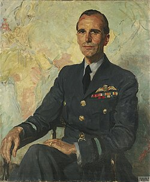

Victor Goddard
Royal Air Force air marshal, 1897 to 1987

A senior RAF commander who was Chief of the Air Staff of the Royal New Zealand Air Force from 1941 to 1943, during the Pacific war. After retiring in 1951 he ran the College of Aeronautics at Cranfield until 1954. 1
He said that in 1935, flying over the disused airfield at Drem in Scotland, he briefly saw it active again, with yellow planes and mechanics in blue overalls, details that came true years later. The story is often told as a time slip. In retirement he lectured on flying saucers, and in a 1969 talk at Caxton Hall in London he argued they could come from an unseen, paraphysical realm rather than another planet. 1
Open in the interactive Watcher
Related
- Air Marshal Goddard's UFO talk Caxton Hall UFO talk, 1969
- Flight Towards Reality Wrote Flight Towards Reality
Sources
- Victor Goddard Wikipedia